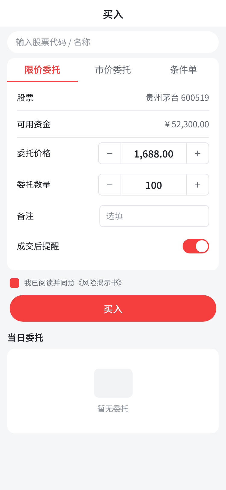

androidproject · android · 共 10 个组件：直接复用 7 · 需确认 1 · 需新建 2
| Figma | 结论 | 推荐 | 依据 | 项目里的真实用法 / 怎么配置 |
|---|---|---|---|---|
| NavBar（未组件化） | 直接复用 | TitleBar | 0.95：同为 navbar，标准组件，项目里已用 13 次 | <com.hjq.bar.TitleBar |
| SearchBar（未组件化） | 需新建 | 需新建组件 | 项目和组件库里都没有 | |
| Tabs（未组件化） | 需确认 | TabLayout | 0.61：同为 tabs，项目几乎不用 Material Components，标准组件 | <com.google.android.material.…TabLayout … /> |
| Cell（未组件化） | 直接复用 | SettingBar | 0.92：同为 cell，项目里已用 14 次 | <com.hjq.custom.widget.layout.SettingBar |
| Stepper（未组件化） | 需新建 | 需新建组件 | 项目和组件库里都没有 | |
| Input（未组件化） | 直接复用 | RegexEditText | 0.92：同为 input，项目里已用 14 次 | <com.hjq.custom.widget.view.RegexEditText项目惯用 style="@style/EditTextStyle"（14 处） |
| Switch（未组件化） | 直接复用 | SwitchButton | 0.88：同为 switch，项目里已用 8 次 | <com.hjq.custom.widget.view.SwitchButton |
| Checkbox（未组件化） | 直接复用 | CheckBox | 0.80：同名，系统原生控件，项目里已用 3 次 | <androidx.appcompat.widget.AppCompatCheckBox |
| Button（未组件化） | 直接复用 | Button | 0.95：同名，系统原生控件，项目里已用 54 次 | <androidx.appcompat.widget.AppCompatButton |
| Empty（未组件化） | 直接复用 | StatusLayout | 0.84：同为 empty，项目里已用 4 次 | <com.hjq.demo.widget.StatusLayout |